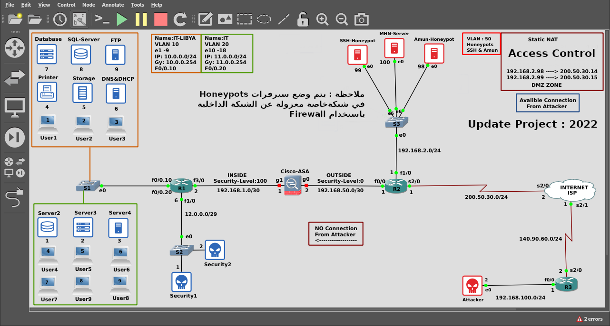
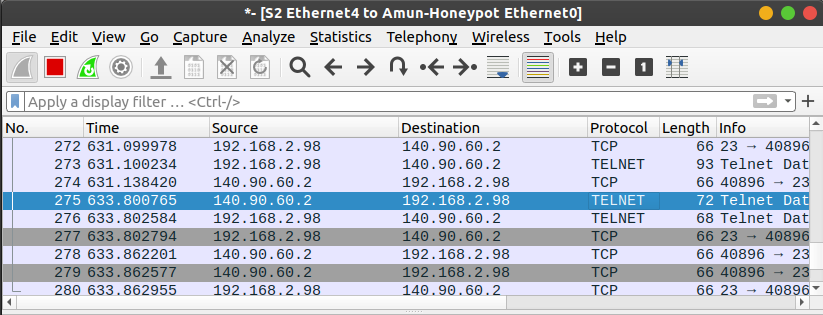
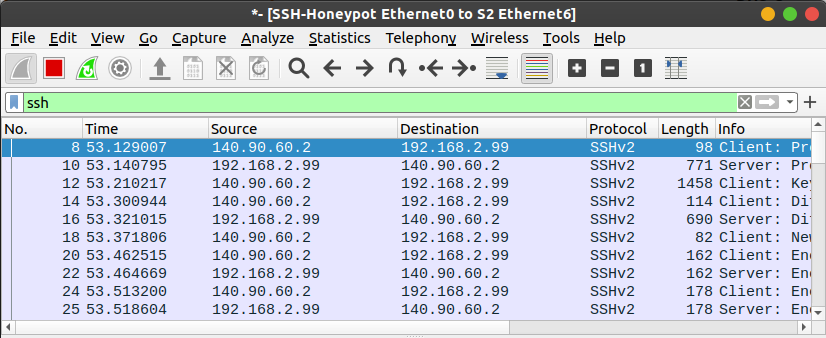

Honeypots Technology To Control Cybercrime
الملخص :
أصبح التحدي الأساسي في يومنا هذا في مجال أمن الشبكات هو مواكبة أنماط التهديدات التي تتطور وتزداد بشكل يومي، وذلك من أجل تأمين الحل الأفضل لحماية أي منظومة، هنالك العديد من آليات الحماية التقليدية كالجدران النارية وأنظمة كشف الاختراق. لكنها لا تؤمن كشف أنواع جديدة من الهجمات لذلك تم اللجوء إلى مصائد الاختراق للكشف عن الهجمات الغير معروفة. مصائد الاختراق هي عبارة عن نظام يتم بناؤه وتكوينه من أجل أن يتم اختراقه، لذلك يتم نشرها داخل المنظومة لكي تساعد على استهلاك موارد المهاجم واستغلال وقته وصرف انتباهه بعيدا عن الأنظمة الفعلية، كما يؤمن بيئة عمل لدراسة التقنيات والطرق المتبعة من قبل المتطفلين على المنظومة. يقدم هذا البحث تقنية مصائد الاختراق لمحاكاة خدمات ...Telnet ,HTTP ,FTP,SSHالخ بالكامل والتفاعل مع المهاجم لكي تساعد على استهلاك موارد المهاجم واستغلال وقته واستخلاص أكبر قدر ممكن من المعلومات القيمة عن المهاجم وتقنياته المتبعة و الأدوات البرمجية المستخدمة وصرف انتباهه بعيدا عن الأنظمة الفعلية. سنقوم باستخدام Modern Honey Network وهو خادم مركزي يستخدم لنشر وإدارة مصائد مخترقي الشبكات، وقد تم تطبيق إطار العمل المقترح باستخدام هجوم التخمين Brute-Force على بروتوكول SSH باستخدام أداة Nmap والاتصال المباشر مع باقي الخدمات.
Honeypots Technology To Control Cybercrime:
ملاحظة :
يتم وضع سيرفرات Honeypots في شبكة خاصة معزولة عن الشبكة الداخليةباستخدام Firewall
Screenshoots : Update Project : 2022


